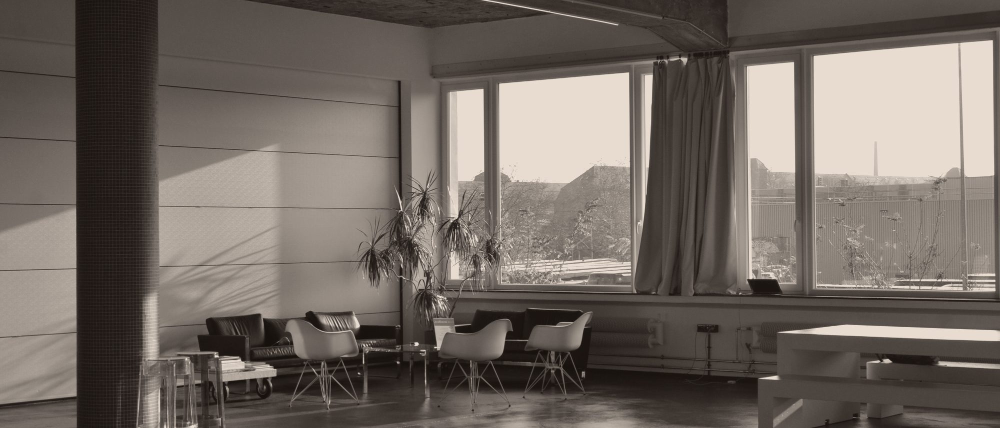

Jornada do paciente em tomografia e mamografia
INRAD — Instituto de Radiologia do HCFMUSP. Mapear a experiência de quem faz o exame, do agendamento à saída, para encontrar onde a espera e a falta de informação viravam ansiedade.
O desafio
O INRAD queria enxergar a jornada dos pacientes de tomografia e mamografia como ela acontecia de fato, e não como o processo previa. O objetivo era identificar as dores ao longo do percurso do exame e as oportunidades de melhoria que estavam invisíveis para quem opera o serviço todos os dias.
Como conduzimos
Atuamos em todas as etapas, da captação do briefing à apresentação da jornada. A pesquisa qualitativa combinou quatro frentes:
- Desk research e matriz CSD, para separar o que era certeza, suposição e dúvida antes de ir a campo.
- Entrevistas em profundidade e focus group com os profissionais que atendem o paciente — recepcionistas, enfermeiros, médicos, técnicos e auxiliares.
- Sombreamento dos pacientes antes e depois da realização do exame.
- Síntese dos achados em personas e no mapa da jornada, com os pontos de oportunidade marcados etapa a etapa.
O que mudou depois
Com as jornadas mapeadas, o instituto passou a agir sobre pontos específicos em vez do processo inteiro. As mudanças observadas depois do projeto:
- Redução do tempo de espera na etapa de recepção.
- Melhor experiência na etapa pré-exame, com instruções e orientações que reduziram o nervosismo de pacientes e acompanhantes.
- Otimização de recursos ao longo do fluxo.
- Aprimoramento na qualidade do atendimento médico.
Os resultados acima são os efeitos observados e relatados pela instituição após a implementação. Não realizamos medição instrumentada antes e depois neste projeto.
Por que este case importa
Serviço de saúde é o ambiente mais duro para design de serviço: o usuário está fragilizado, a operação é regulada e a equipe de linha de frente não tem folga para experimentar. Mapear a jornada com os próprios profissionais dentro do processo foi o que tornou as mudanças executáveis sem parar o atendimento.
